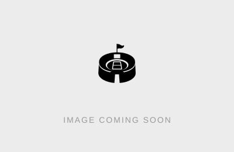
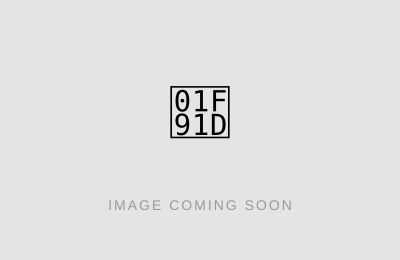
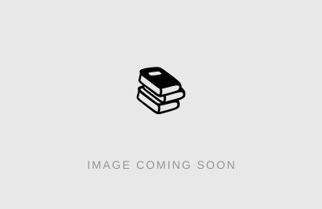

法政多摩Jリーグ同好会
サッカーを、
もっと熱く語れる
仲間がここに。
法政大学多摩キャンパス発、Jリーグ観戦がメインの同好会です。
スタジアムでも、教室でも、画面の前でも――全力で応援しよう。
ABOUT US
同好会について
法政多摩Jリーグ同好会は、法政大学の学生が集まり、多摩キャンパスを拠点に、Jリーグの試合観戦を中心に活動している同好会です。
活動理念は「Jリーグという文化の発展に寄与すること」。「特定のチームのファンだけ」ではなく、いろいろなクラブを応援するメンバーが集まっているのが特徴です。スタジアムでの現地観戦はもちろん、教室に集まっての観戦会も定期的に開催しています。
サッカー経験の有無や知識量は関係なし。「サッカー好きな人と話したい」「一緒に観に行く人がほしい」、そんな気持ちだけで大歓迎です。
ACTIVITY
活動内容

スタジアム観戦
週末を中心に、みんなでスタジアムへ足を運んで現地観戦。首都圏のクラブを中心に、遠征に出かけることもあります。
活動報告を見る →
ボランティア
Jリーグクラブが主催するボランティアに参加し、Jリーグを裏側から支える活動もしています。会場の雰囲気を肌で感じられる貴重な機会です。
活動報告を見る →フットサル・交流会
観戦だけでなく、たまに自分たちでフットサルをすることも。学年やキャンパスを超えた交流も生まれています。
活動報告を見る →
Jリーグに関する研究
集客戦略やクラブ経営、地域との関わりなど、Jリーグを学術的な視点から研究する活動も行っています。
活動報告を見る →ACTIVITY REPORT
活動報告
スタジアム観戦・ボランティア・フットサル交流・Jリーグに関する研究など、カテゴリー別の直近の活動報告です。過去の報告は一覧ページでご覧いただけます。
こちらには直近3ヶ月分の活動報告を掲載しています。それ以前の活動の様子は公式Instagramでご覧いただけます。
📷 Instagramで見る → 活動報告アーカイブをすべて見るSCHEDULE
イベントスケジュール
当サークルが主催するイベントのスケジュールです。最新情報はSNSでも発信しています。
| 日程 | 活動内容 | 活動場所 | 参加費の有無 | 詳細 |
|---|---|---|---|---|
| 調整中 | スタジアム観戦 | 詳細はSNSで告知 | 調整中 | ー |
| 調整中 | みんなで観戦会 | 多摩キャンパス周辺 | 調整中 | ー |
※ スケジュールは変更になる場合があります。最新情報は各SNSをご確認ください。
JOIN US
入会案内
こんな人におすすめ
- Jリーグ・サッカーが好き（にわか歓迎）
- 一緒にスタジアムへ行く友達がほしい
- 法政多摩キャンパスで新しいコミュニティを探している
- 推しクラブについて語り合いたい
学年・学部・キャンパス不問。法政大学の学生であればどなたでも参加できます。まずはSNSをフォロー、お気軽にDMをどうぞ。
各種SNSアカウントはお問い合わせのページをご確認ください。
SNSアカウントをフォロー
DMまたはお問い合わせフォームから連絡
入会手続きを行う
入会完了！次回以降の活動でお待ちしています。